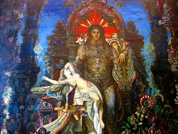

Sacred Texts Buddhism
Buy this Book at Amazon.com
|  | India in Primitive Christianityby Arthur Lillie[1909] |
The connection between Christianity and Buddhism is unmistakable, both in terms of the traditional narratives of the respective founders, and in their parable-riddled attributed sayings. Some, particularly occultists, have attempted to explain this by proposing a residence in India by Jesus during his 'lost years,' for instance, Notovich, and the derivative work by Dowling. Arthur Lillie here examines possible historical linkages between the two religions from a critical, rationalist, viewpoint.
His theory will be thought-provoking for Buddhists and Christians alike. Lillie explores some of the same issues which John Robertson targets in Pagan Christs, particularly the evolution of sacrificial rites into symbolic forms. He is not a believer in the historicity of either Jesus or Buddha, and he pokes a lot of holes in the normative chronology of Buddhism. Lillie is also trying to open up an additional front here, by attempting to reduce much of Indian mythology to a multiplication of forms of Shiva. This is a radical view which blurs some of the efficacy of this book. He also, curiously enough, ignores the parallels between the Christ and Krishna stories, which many others have remarked on.
On the whole, this controversial thesis is an enjoyable read, and a rare attempt by a free-thinker to confront the issue of diffusion of religious concepts from India to the Near East.
PRODUCTION NOTES: There were a lot of typographical errors in this book, which I corrected in the usual fashion. Spelling of non-English terms was highly inconsistent; and I was careful to transcribe each variant as it appeared, even if I knew it to be incorrect. Lastly, there is what appears to be a lacuna of several paragraphs at pages 231 and 232; a numbered list of astrological signs starts at the latter page with the number 3. I have no explanation for this.--J.B. Hare, February 26, 2008.